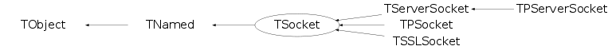

class TSocket: public TNamed
TSocket This class implements client sockets. A socket is an endpoint for communication between two machines. The actual work is done via the TSystem class (either TUnixSystem or TWinNTSystem).
Function Members (Methods)
public:
| TSocket(const char* sockpath) | |
| TSocket(Int_t descriptor) | |
| TSocket(const TSocket& s) | |
| TSocket(Int_t descriptor, const char* sockpath) | |
| TSocket(TInetAddress address, const char* service, Int_t tcpwindowsize = -1) | |
| TSocket(TInetAddress address, Int_t port, Int_t tcpwindowsize = -1) | |
| TSocket(const char* host, const char* service, Int_t tcpwindowsize = -1) | |
| TSocket(const char* host, Int_t port, Int_t tcpwindowsize = -1) | |
| virtual | ~TSocket() |
| void | TObject::AbstractMethod(const char* method) const |
| virtual void | TObject::AppendPad(Option_t* option = "") |
| virtual void | TObject::Browse(TBrowser* b) |
| static TClass* | Class() |
| virtual const char* | TObject::ClassName() const |
| virtual void | TNamed::Clear(Option_t* option = "") |
| virtual TObject* | TNamed::Clone(const char* newname = "") const |
| virtual void | Close(Option_t* opt = "") |
| virtual Int_t | TNamed::Compare(const TObject* obj) const |
| virtual void | TNamed::Copy(TObject& named) const |
| static TSocket* | CreateAuthSocket(const char* url, Int_t size = 0, Int_t tcpwindowsize = -1, TSocket* s = 0, Int_t* err = 0) |
| static TSocket* | CreateAuthSocket(const char* user, const char* host, Int_t port, Int_t size = 0, Int_t tcpwindowsize = -1, TSocket* s = 0, Int_t* err = 0) |
| virtual void | TObject::Delete(Option_t* option = "")MENU |
| virtual Int_t | TObject::DistancetoPrimitive(Int_t px, Int_t py) |
| virtual void | TObject::Draw(Option_t* option = "") |
| virtual void | TObject::DrawClass() constMENU |
| virtual TObject* | TObject::DrawClone(Option_t* option = "") constMENU |
| virtual void | TObject::Dump() constMENU |
| virtual void | TObject::Error(const char* method, const char* msgfmt) const |
| virtual void | TObject::Execute(const char* method, const char* params, Int_t* error = 0) |
| virtual void | TObject::Execute(TMethod* method, TObjArray* params, Int_t* error = 0) |
| virtual void | TObject::ExecuteEvent(Int_t event, Int_t px, Int_t py) |
| virtual void | TObject::Fatal(const char* method, const char* msgfmt) const |
| virtual void | TNamed::FillBuffer(char*& buffer) |
| virtual TObject* | TObject::FindObject(const char* name) const |
| virtual TObject* | TObject::FindObject(const TObject* obj) const |
| UInt_t | GetBytesRecv() const |
| UInt_t | GetBytesSent() const |
| static Int_t | GetClientProtocol() |
| Int_t | GetCompressionAlgorithm() const |
| Int_t | GetCompressionLevel() const |
| Int_t | GetCompressionSettings() const |
| virtual Int_t | GetDescriptor() const |
| virtual Option_t* | TObject::GetDrawOption() const |
| static Long_t | TObject::GetDtorOnly() |
| Int_t | GetErrorCode() const |
| virtual const char* | TObject::GetIconName() const |
| TInetAddress | GetInetAddress() const |
| TTimeStamp | GetLastUsage() |
| virtual TInetAddress | GetLocalInetAddress() |
| virtual Int_t | GetLocalPort() |
| virtual const char* | TNamed::GetName() const |
| virtual char* | TObject::GetObjectInfo(Int_t px, Int_t py) const |
| static Bool_t | TObject::GetObjectStat() |
| virtual Int_t | GetOption(ESockOptions opt, Int_t& val) |
| Int_t | GetPort() const |
| Int_t | GetRemoteProtocol() const |
| TSecContext* | GetSecContext() const |
| const char* | GetService() const |
| Int_t | GetServType() const |
| static ULong64_t | GetSocketBytesRecv() |
| static ULong64_t | GetSocketBytesSent() |
| Int_t | GetTcpWindowSize() const |
| virtual const char* | TNamed::GetTitle() const |
| virtual UInt_t | TObject::GetUniqueID() const |
| const char* | GetUrl() const |
| virtual Bool_t | TObject::HandleTimer(TTimer* timer) |
| virtual ULong_t | TNamed::Hash() const |
| virtual void | TObject::Info(const char* method, const char* msgfmt) const |
| virtual Bool_t | TObject::InheritsFrom(const char* classname) const |
| virtual Bool_t | TObject::InheritsFrom(const TClass* cl) const |
| virtual void | TObject::Inspect() constMENU |
| void | TObject::InvertBit(UInt_t f) |
| virtual TClass* | IsA() const |
| virtual Bool_t | IsAuthenticated() const |
| virtual Bool_t | TObject::IsEqual(const TObject* obj) const |
| virtual Bool_t | TObject::IsFolder() const |
| Bool_t | TObject::IsOnHeap() const |
| virtual Bool_t | TNamed::IsSortable() const |
| virtual Bool_t | IsValid() const |
| Bool_t | TObject::IsZombie() const |
| virtual void | TNamed::ls(Option_t* option = "") const |
| void | TObject::MayNotUse(const char* method) const |
| static void | NetError(const char* where, Int_t error) |
| virtual Bool_t | TObject::Notify() |
| void | TObject::Obsolete(const char* method, const char* asOfVers, const char* removedFromVers) const |
| static void | TObject::operator delete(void* ptr) |
| static void | TObject::operator delete(void* ptr, void* vp) |
| static void | TObject::operator delete[](void* ptr) |
| static void | TObject::operator delete[](void* ptr, void* vp) |
| void* | TObject::operator new(size_t sz) |
| void* | TObject::operator new(size_t sz, void* vp) |
| void* | TObject::operator new[](size_t sz) |
| void* | TObject::operator new[](size_t sz, void* vp) |
| virtual void | TObject::Paint(Option_t* option = "") |
| virtual void | TObject::Pop() |
| virtual void | TNamed::Print(Option_t* option = "") const |
| virtual Int_t | TObject::Read(const char* name) |
| virtual Int_t | Reconnect() |
| virtual void | TObject::RecursiveRemove(TObject* obj) |
| virtual Int_t | Recv(TMessage*& mess) |
| virtual Int_t | Recv(Int_t& status, Int_t& kind) |
| virtual Int_t | Recv(char* mess, Int_t max) |
| virtual Int_t | Recv(char* mess, Int_t max, Int_t& kind) |
| virtual Int_t | RecvRaw(void* buffer, Int_t length, ESendRecvOptions opt = kDefault) |
| void | TObject::ResetBit(UInt_t f) |
| virtual void | TObject::SaveAs(const char* filename = "", Option_t* option = "") constMENU |
| virtual void | TObject::SavePrimitive(ostream& out, Option_t* option = "") |
| virtual Int_t | Select(Int_t interest = kRead, Long_t timeout = -1) |
| virtual Int_t | Send(const TMessage& mess) |
| virtual Int_t | Send(Int_t kind) |
| virtual Int_t | Send(Int_t status, Int_t kind) |
| virtual Int_t | Send(const char* mess, Int_t kind = kMESS_STRING) |
| virtual Int_t | SendObject(const TObject* obj, Int_t kind = kMESS_OBJECT) |
| virtual Int_t | SendRaw(const void* buffer, Int_t length, ESendRecvOptions opt = kDefault) |
| void | TObject::SetBit(UInt_t f) |
| void | TObject::SetBit(UInt_t f, Bool_t set) |
| void | SetCompressionAlgorithm(Int_t algorithm = 0) |
| void | SetCompressionLevel(Int_t level = 1) |
| void | SetCompressionSettings(Int_t settings = 1) |
| virtual void | TObject::SetDrawOption(Option_t* option = "")MENU |
| static void | TObject::SetDtorOnly(void* obj) |
| virtual void | TNamed::SetName(const char* name)MENU |
| virtual void | TNamed::SetNameTitle(const char* name, const char* title) |
| static void | TObject::SetObjectStat(Bool_t stat) |
| virtual Int_t | SetOption(ESockOptions opt, Int_t val) |
| void | SetRemoteProtocol(Int_t rproto) |
| void | SetSecContext(TSecContext* ctx) |
| void | SetService(const char* service) |
| void | SetServType(Int_t st) |
| virtual void | TNamed::SetTitle(const char* title = "")MENU |
| virtual void | TObject::SetUniqueID(UInt_t uid) |
| void | SetUrl(const char* url) |
| virtual void | ShowMembers(TMemberInspector& insp) |
| virtual Int_t | TNamed::Sizeof() const |
| virtual void | Streamer(TBuffer& b) |
| void | StreamerNVirtual(TBuffer& b) |
| virtual void | TObject::SysError(const char* method, const char* msgfmt) const |
| Bool_t | TObject::TestBit(UInt_t f) const |
| Int_t | TObject::TestBits(UInt_t f) const |
| void | Touch() |
| virtual void | TObject::UseCurrentStyle() |
| virtual void | TObject::Warning(const char* method, const char* msgfmt) const |
| virtual Int_t | TObject::Write(const char* name = 0, Int_t option = 0, Int_t bufsize = 0) |
| virtual Int_t | TObject::Write(const char* name = 0, Int_t option = 0, Int_t bufsize = 0) const |
protected:
| TSocket() | |
| Bool_t | Authenticate(const char* user) |
| virtual void | TObject::DoError(int level, const char* location, const char* fmt, va_list va) const |
| void | TObject::MakeZombie() |
| Bool_t | RecvProcessIDs(TMessage* mess) |
| Bool_t | RecvStreamerInfos(TMessage* mess) |
| void | SendProcessIDs(const TMessage& mess) |
| void | SendStreamerInfos(const TMessage& mess) |
| void | SetDescriptor(Int_t desc) |
Data Members
public:
| enum EStatusBits { | kIsUnix | |
| kBrokenConn | ||
| }; | ||
| enum EInterest { | kRead | |
| kWrite | ||
| }; | ||
| enum EServiceType { | kSOCKD | |
| kROOTD | ||
| kPROOFD | ||
| }; | ||
| enum TObject::EStatusBits { | kCanDelete | |
| kMustCleanup | ||
| kObjInCanvas | ||
| kIsReferenced | ||
| kHasUUID | ||
| kCannotPick | ||
| kNoContextMenu | ||
| kInvalidObject | ||
| }; | ||
| enum TObject::[unnamed] { | kIsOnHeap | |
| kNotDeleted | ||
| kZombie | ||
| kBitMask | ||
| kSingleKey | ||
| kOverwrite | ||
| kWriteDelete | ||
| }; |
protected:
| TInetAddress | fAddress | remote internet address and port # |
| TBits | fBitsInfo | bits array to mark TStreamerInfo classes already sent |
| UInt_t | fBytesRecv | total bytes received over this socket |
| UInt_t | fBytesSent | total bytes sent using this socket |
| Int_t | fCompress | Compression level and algorithm |
| TTimeStamp | fLastUsage | Time stamp of last usage |
| TVirtualMutex* | fLastUsageMtx | Protect last usage setting / reading |
| TInetAddress | fLocalAddress | local internet address and port # |
| TString | TNamed::fName | object identifier |
| Int_t | fRemoteProtocol | protocol of remote daemon |
| TSecContext* | fSecContext | after a successful Authenticate call |
| TSocket::EServiceType | fServType | remote service type |
| TString | fService | name of service (matches remote port #) |
| Int_t | fSocket | socket descriptor |
| Int_t | fTcpWindowSize | TCP window size (default 65535); |
| TString | TNamed::fTitle | object title |
| TList* | fUUIDs | list of TProcessIDs already sent through the socket |
| TString | fUrl | needs this for special authentication options |
| static ULong64_t | fgBytesRecv | total bytes received by all socket objects |
| static ULong64_t | fgBytesSent | total bytes sent by all socket objects |
| static Int_t | fgClientProtocol | client "protocol" version |
Class Charts
{kind=link}
{kind=link}
{kind=link}
{kind=link}

Function documentation
TSocket(TInetAddress address, const char* service, Int_t tcpwindowsize = -1)
Create a socket. Connect to the named service at address addr. Use tcpwindowsize to specify the size of the receive buffer, it has to be specified here to make sure the window scale option is set (for tcpwindowsize > 65KB and for platforms supporting window scaling). Returns when connection has been accepted by remote side. Use IsValid() to check the validity of the socket. Every socket is added to the TROOT sockets list which will make sure that any open sockets are properly closed on program termination.
TSocket(TInetAddress address, Int_t port, Int_t tcpwindowsize = -1)
Create a socket. Connect to the specified port # at address addr. Use tcpwindowsize to specify the size of the receive buffer, it has to be specified here to make sure the window scale option is set (for tcpwindowsize > 65KB and for platforms supporting window scaling). Returns when connection has been accepted by remote side. Use IsValid() to check the validity of the socket. Every socket is added to the TROOT sockets list which will make sure that any open sockets are properly closed on program termination.
TSocket(const char* host, const char* service, Int_t tcpwindowsize = -1)
Create a socket. Connect to named service on the remote host. Use tcpwindowsize to specify the size of the receive buffer, it has to be specified here to make sure the window scale option is set (for tcpwindowsize > 65KB and for platforms supporting window scaling). Returns when connection has been accepted by remote side. Use IsValid() to check the validity of the socket. Every socket is added to the TROOT sockets list which will make sure that any open sockets are properly closed on program termination.
TSocket(const char* host, Int_t port, Int_t tcpwindowsize = -1)
Create a socket; see CreateAuthSocket for the form of url. Connect to the specified port # on the remote host. If user is specified in url, try authentication as user. Use tcpwindowsize to specify the size of the receive buffer, it has to be specified here to make sure the window scale option is set (for tcpwindowsize > 65KB and for platforms supporting window scaling). Returns when connection has been accepted by remote side. Use IsValid() to check the validity of the socket. Every socket is added to the TROOT sockets list which will make sure that any open sockets are properly closed on program termination.
TSocket(const char* sockpath)
TSocket(Int_t descriptor)
Create a socket. The socket will adopt previously opened TCP socket with descriptor desc.
TSocket(Int_t descriptor, const char* sockpath)
Create a socket. The socket will adopt previously opened Unix socket with descriptor desc. The sockpath arg is for info purposes only. Use this method to adopt e.g. a socket created via socketpair().
TInetAddress GetLocalInetAddress()
Return internet address of local host to which the socket is bound. In case of error TInetAddress::IsValid() returns kFALSE.
Int_t GetLocalPort()
Return the local port # to which the socket is bound. In case of error return -1.
Int_t Select(Int_t interest = kRead, Long_t timeout = -1)
Waits for this socket to change status. If interest=kRead, the socket will be watched to see if characters become available for reading; if interest=kWrite the socket will be watched to see if a write will not block. The argument 'timeout' specifies a maximum time to wait in millisec. Default no timeout. Returns 1 if a change of status of interest has been detected within timeout; 0 in case of timeout; < 0 if an error occured.
Int_t Send(Int_t kind)
Send a single message opcode. Use kind (opcode) to set the TMessage "what" field. Returns the number of bytes that were sent (always sizeof(Int_t)) and -1 in case of error. In case the kind has been or'ed with kMESS_ACK, the call will only return after having received an acknowledgement, making the sending process synchronous.
Int_t Send(Int_t status, Int_t kind)
Send a status and a single message opcode. Use kind (opcode) to set the TMessage "what" field. Returns the number of bytes that were sent (always 2*sizeof(Int_t)) and -1 in case of error. In case the kind has been or'ed with kMESS_ACK, the call will only return after having received an acknowledgement, making the sending process synchronous.
Int_t Send(const char* mess, Int_t kind = kMESS_STRING)
Send a character string buffer. Use kind to set the TMessage "what" field. Returns the number of bytes in the string str that were sent and -1 in case of error. In case the kind has been or'ed with kMESS_ACK, the call will only return after having received an acknowledgement, making the sending process synchronous.
Int_t Send(const TMessage& mess)
Send a TMessage object. Returns the number of bytes in the TMessage that were sent and -1 in case of error. In case the TMessage::What has been or'ed with kMESS_ACK, the call will only return after having received an acknowledgement, making the sending process synchronous. Returns -4 in case of kNoBlock and errno == EWOULDBLOCK. Returns -5 if pipe broken or reset by peer (EPIPE || ECONNRESET). support for streaming TStreamerInfo added by Rene Brun May 2008 support for streaming TProcessID added by Rene Brun June 2008
Int_t SendObject(const TObject* obj, Int_t kind = kMESS_OBJECT)
Send an object. Returns the number of bytes sent and -1 in case of error. In case the "kind" has been or'ed with kMESS_ACK, the call will only return after having received an acknowledgement, making the sending synchronous.
Int_t SendRaw(const void* buffer, Int_t length, ESendRecvOptions opt = kDefault)
Send a raw buffer of specified length. Using option kOob one can send OOB data. Returns the number of bytes sent or -1 in case of error. Returns -4 in case of kNoBlock and errno == EWOULDBLOCK. Returns -5 if pipe broken or reset by peer (EPIPE || ECONNRESET).
void SendStreamerInfos(const TMessage& mess)
Check if TStreamerInfo must be sent. The list of TStreamerInfo of classes in the object in the message is in the fInfos list of the message. We send only the TStreamerInfos not yet sent on this socket.
void SendProcessIDs(const TMessage& mess)
Check if TProcessIDs must be sent. The list of TProcessIDs in the object in the message is found by looking in the TMessage bits. We send only the TProcessIDs not yet send on this socket.
Int_t Recv(char* mess, Int_t max)
Receive a character string message of maximum max length. The expected message must be of type kMESS_STRING. Returns length of received string (can be 0 if otherside of connection is closed) or -1 in case of error or -4 in case a non-blocking socket would block (i.e. there is nothing to be read).
Int_t Recv(char* mess, Int_t max, Int_t& kind)
Receive a character string message of maximum max length. Returns in kind the message type. Returns length of received string+4 (can be 0 if other side of connection is closed) or -1 in case of error or -4 in case a non-blocking socket would block (i.e. there is nothing to be read).
Int_t Recv(Int_t& status, Int_t& kind)
Receives a status and a message type. Returns length of received integers, 2*sizeof(Int_t) (can be 0 if other side of connection is closed) or -1 in case of error or -4 in case a non-blocking socket would block (i.e. there is nothing to be read).
Int_t Recv(TMessage*& mess)
Receive a TMessage object. The user must delete the TMessage object. Returns length of message in bytes (can be 0 if other side of connection is closed) or -1 in case of error or -4 in case a non-blocking socket would block (i.e. there is nothing to be read) or -5 if pipe broken or reset by peer (EPIPE || ECONNRESET). In those case mess == 0.
Int_t RecvRaw(void* buffer, Int_t length, ESendRecvOptions opt = kDefault)
Receive a raw buffer of specified length bytes. Using option kPeek one can peek at incoming data. Returns number of received bytes. Returns -1 in case of error. In case of opt == kOob: -2 means EWOULDBLOCK and -3 EINVAL. In case of non-blocking mode (kNoBlock) -4 means EWOULDBLOCK. Returns -5 if pipe broken or reset by peer (EPIPE || ECONNRESET).
Bool_t RecvStreamerInfos(TMessage* mess)
Receive a message containing streamer infos. In case the message contains streamer infos they are imported, the message will be deleted and the method returns kTRUE.
Bool_t RecvProcessIDs(TMessage* mess)
Receive a message containing process ids. In case the message contains process ids they are imported, the message will be deleted and the method returns kTRUE.
Int_t GetErrorCode() const
Returns error code. Meaning depends on context where it is called. If no error condition returns 0 else a value < 0. For example see TServerSocket ctor.
void SetCompressionSettings(Int_t settings = 1)
Used to specify the compression level and algorithm: settings = 100 * algorithm + level level = 0, objects written to this file will not be compressed. level = 1, minimal compression level but fast. level = 9, maximal compression level but slower and might use more memory. (For the currently supported algorithms, the maximum level is 9) If compress is negative it indicates the compression level is not set yet. The enumeration ROOT::ECompressionAlgorithm associates each algorithm with a number. There is a utility function to help to set the value of the argument. For example, ROOT::CompressionSettings(ROOT::kLZMA, 1) will build an integer which will set the compression to use the LZMA algorithm and compression level 1. These are defined in the header file Compression.h. Note that the compression settings may be changed at any time. The new compression settings will only apply to branches created or attached after the setting is changed and other objects written after the setting is changed.
TSocket * CreateAuthSocket(const char* url, Int_t size = 0, Int_t tcpwindowsize = -1, TSocket* s = 0, Int_t* err = 0)
Creates a socket or a parallel socket and authenticates to the remote server. url: [[proto][p][auth]://][user@]host[:port][/service][?options] where proto = "sockd", "rootd", "proofd" indicates the type of remote server; if missing "sockd" is assumed ("sockd" indicates any remote server session using TServerSocket) [p] = for parallel sockets (forced internally for rootd; ignored for proofd) [auth] = "up", "s", "k", "g", "h", "ug" to force UsrPwd, SRP, Krb5, Globus, SSH or UidGid authentication [port] = is the remote port number [service] = service name used to determine the port (for backward compatibility, specification of port as priority) options = "m" or "s", when proto=proofd indicates whether we are master or slave (used internally by TSlave) An already opened connection can be used by passing its socket in opensock. If 'err' is defined, '*err' on return from a failed call contains an error code (see NetErrors.h). Example: TSocket::CreateAuthSocket("rootds://qwerty@machine.fq.dn:5051") creates an authenticated socket to a rootd server running on remote machine machine.fq.dn on port 5051; "parallel" sockets are forced internally because rootd expects parallel sockets; however a simple socket will be created in this case because the size is 0 (the default); authentication will attempt protocol SRP first. TSocket::CreateAuthSocket("pk://qwerty@machine.fq.dn:5052",3) creates an authenticated parallel socket of size 3 to a sockd server running on remote machine machine.fq.dn on port 5052; authentication will attempt protocol Kerberos first. NB: may hang if the remote server is not of the correct type; at present TSocket has no way to find out the type of the remote server automatically Returns pointer to an authenticated socket or 0 if creation or authentication is unsuccessful.
TSocket * CreateAuthSocket(const char* user, const char* host, Int_t port, Int_t size = 0, Int_t tcpwindowsize = -1, TSocket* s = 0, Int_t* err = 0)
Creates a socket or a parallel socket and authenticates to the remote server specified in 'url' on remote 'port' as 'user'. url: [[proto][p][auth]://]host[/?options] where proto = "sockd", "rootd", "proofd" indicates the type of remote server if missing "sockd" is assumed ("sockd" indicates any remote server session using TServerSocket) [p] = for parallel sockets (forced internally for rootd) [auth] = "up", "s", "k", "g", "h", "ug" to force UsrPwd, SRP, Krb5, Globus, SSH or UidGid authentication [options] = "m" or "s", when proto=proofd indicates whether we are master or slave (used internally by TSlave) An already opened connection can be used by passing its socket in opensock. If 'err' is defined, '*err' on return from a failed call contains an error code (see NetErrors.h). Example: TSocket::CreateAuthSocket("qwerty","rootdps://machine.fq.dn",5051) creates an authenticated socket to a rootd server running on remote machine machine.fq.dn on port 5051; "parallel" sockets are forced internally because rootd expects parallel sockets; however a simple socket will be created in this case because the size is 0 (the default); authentication will attempt protocol SRP first. TSocket::CreateAuthSocket("qwerty","pk://machine.fq.dn:5052",3) creates an authenticated parallel socket of size 3 to a sockd server running on remote machine machine.fq.dn on port 5052; authentication will attempt protocol Kerberos first. NB: may hang if the remote server is not of the correct type; at present TSocket has no way to find out the type of the remote server automatically Returns pointer to an authenticated socket or 0 if creation or authentication is unsuccessful.
friend class TProofServ; // to be able to call SetDescriptor()